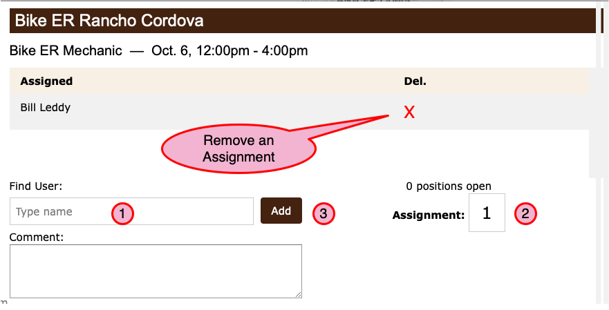

How to Assign Users to Jobs¶
(Jump to Assign a User)
As an Administrator or the Event coordinator, you have the ability to assign users to work the event and to remove a user’s assignment as needed.
Though these instructions cover making an assignment through the “Back End”, you can also remove a user assignment which the user created with the normal sign up process.
Assign a User¶
To start, click the Assign button from the Job list of the Event record.

- Search for a user to assign
Start typing the name of a user you want to assign to this job.
When you find the name, click on it in the list to select it.
You can assign any user to any job you like. You can also assign as many people to the job as you wish.
Specify the number of “slots” you’re assigning the user in case they’re bringing a friend.
- Click the Add button to make the assignment.
The user’s name will be added to the list at the top of the form.
When you add a user to the job they will receive an email with their assignment info if the job date is in the future (Why would I do this?).
{kind=link}
Remove a user assignment¶
You can also remove a user’s assignment by clicking the “X” next to their name in the list at the top of the form.
When you remove a user’s assignment they will receive an email informing them of the change if the job date is in the future (Why would I do this?).
Why Assign Users to Past Jobs¶
When a user signs up for a job, or is assigned a job by you, a corresponding Attendance Record is created.
Attendance records are used to track who did what for future reference. They are also very helpful in the case of paid staff so that you are able to pay them for their actual hours worked.
There are times when in the heat of the moment you may need to shuffle staff around to cover all the bases. The system gives you the option to update the job assignments after the fact so that your records are accurate but without restricting how you actually do the work.
The same thing applies when you remove a user’s assignment (but in reverse, of course). The Attendance record is deleted in that case.